library(tidyverse)
hib <- read_csv("https://raw.githubusercontent.com/zilinskyjan/datasets/master/politics/hibbing2023_who_should_govern.csv")5 Standard charts
This lesson covers fundamental visualization techniques using political survey data. We’ll explore how to effectively communicate findings about public opinion through bar charts, scatterplots, and distribution plots. The examples demonstrate how survey data about political attitudes can reveal interesting patterns about how people view political power, candidates, and institutions.
5.1 Who should hold more power?
When we map rows (individual observations) to numbers, a bar chart can be a good choice for comparing quantities across different categories or groups.
Consider this dataset from Hibbing et al. (2023), which contains survey responses about which groups should have more or less influence in politics. The original research examines how Americans view the appropriate role of different actors in the political system.
This code loads a CSV file containing survey data from a GitHub repository. The dataset contains responses from Americans about which groups should hold political influence. We’ll use the tidyverse package for data manipulation and visualization throughout this lesson.
The survey data has already been aggregated, so you can think of these cell entries as toplines. The rows are actors (groups) and the columns are the percentage of respondents who think that the influence of each group should increase or decrease:
head(hib)# A tibble: 6 x 5
group influence_incr influence_decr political type
<chr> <dbl> <dbl> <dbl> <chr>
1 "People who experienced real pr~ 59.9 3.5 0 Peop~
2 "Politicians who can\u2019t ben~ 49.4 11.6 0 Peop~
3 "Scientists" 48.3 10.4 0 Expe~
4 "Medical doctors" 38 7.6 0 Expe~
5 "State and local governments" 31.9 13.3 1 Stan~
6 "Unelected experts" 31 18.3 0 Expe~When you run this code, you should see a table with several columns. The group column contains different political actors (like “Journalists,” “Military leaders,” “Ordinary people”), the influence_incr column shows the percentage who want that group to have more influence, influence_decr shows those who want less influence, and the type column categorizes these groups.
Although we could simply run this code to create a bar chart, we ought to treat this as a draft zero:
hib %>%
ggplot(aes(y=group,
x=influence_incr)) +
geom_col() +
ggtitle("Whose influence should increase?")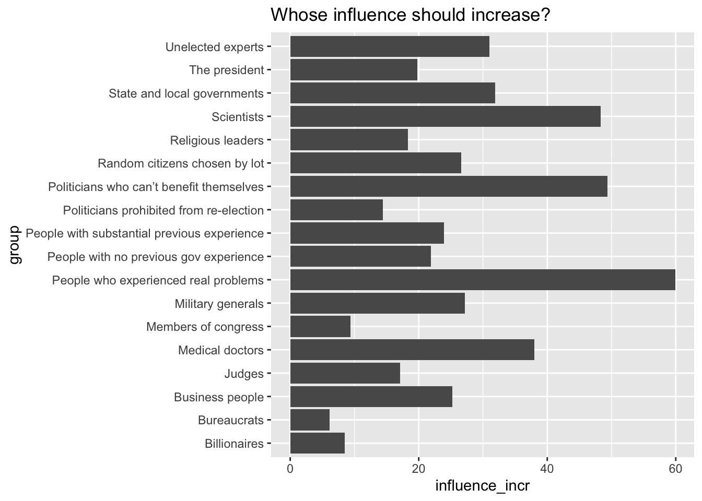
Looks like I already added a type column:
hib %>% count(type)# A tibble: 4 x 2
type n
<chr> <int>
1 Experts 4
2 People 5
3 Specialized experts 4
4 Standard 5This shows us that the data already includes a categorical variable that groups the political actors. We have four categories.
I will now relabel one of the categories to make it more descriptive:
hib$type[hib$type=="Standard"] <- "Establishment"
unique(hib$type)[1] "People" "Experts" "Establishment"
[4] "Specialized experts"The “Standard” label is being changed to “Establishment”.
I will also store some color codes, using the rcartocolor package:
H_pal <- rcartocolor::carto_pal(n = 4, name = "ag_Sunset")And now I can make an enhanced version of the bar chart:
hib %>%
ggplot(aes(y=fct_reorder(group,influence_incr),
x=influence_incr,
fill=type)) +
geom_col() +
scale_fill_manual(values=H_pal[c(4,1,2,3)]) +
labs(x="Percent",y="",
title="Whose political power should be increased?",
caption = "Data: Hibbing et al. (2023)",
fill="") +
theme_gray() +
theme(text = element_text(size=13)) +
theme(plot.caption.position = "plot",
plot.title.position = "plot",
plot.title = element_text(hjust = 0),
axis.title.x = element_text(hjust = 1))
In Version 2, I first transformed the ordering of the bars by using fct_reorder(group, influence_incr). Rather than displaying the groups in their original factor order, we now sort them by the value of influence_incr, which makes the largest to smallest progression visually intuitive. This reordering helps readers immediately grasp which groups have relatively low or high suggested increases in influence.
Next, we introduced a new aesthetic mapping by filling the bars according to a type variable. Instead of the uniform color of the first version (draft zero), each bar now visually encodes its category, allowing the reader to distinguish subgroups at a glance. This addition only enhances the chart’s informational depth and also leverages color to communicate an extra dimension of our data.
To maintain control over the appearance of those colored bars, we have applied scale_fill_manual(values = H_pal[c(4,1,2,3)]). We customized the look of the plot by explicitly selecting colors from our H_pal palette in the order 4, 1, 2, 3. This manual scale replaces ggplot2’s default palette, giving the plot a custom look.
We also enriched the chart’s descriptive elements by refining titles, axis labels, and captions.
In contrast to the default styling, the second version adopts theme_gray() and globally increases text size to 13 points. These changes create a cleaner stylistic foundation and improve legibility, particularly for presentations or printed formats.
Lastly, we fine-tuned the alignment of both the title and caption by setting plot.title.position = "plot" and plot.caption.position = "plot", then aligning the title all the way to the left with hjust = 0. Similarly, right-aligning the x-axis title via axis.title.x = element_text(hjust = 1) anchors it neatly under the panel’s right edge. These precise adjustments guarantee that textual elements hug the plot margins consistently, resulting in a balanced and intentional layout.
5.2 Two Dimensions of American Politics
We’ll now make bar charts, scatterplots, stacked overlapping distributions (joyplots), and some other charts, using data on which the paper American Politics in Two Dimensions is based:
library(tidyverse)
library(haven)
library(labelled)
theme_set(theme_minimal())
theme_update(text = element_text(size=13),
#text = element_text(family="Source Sans Pro")
)
# READ IN RECODED DATA
source("data/ajps2021/0_ajps_recode.R")As always, take a quick look at the structure of the datasets.
In this case, we have data from 3 surveys, which are stored in d1, d2, and d3.
head(d2)# A tibble: 6 x 77
caseid female edu black hispanic age income pid ideo interest attend
<chr> <dbl> <dbl> <dbl> <dbl> <dbl> <dbl> <dbl+l> <dbl> <dbl> <dbl>
1 R_2zZv~ 0 5 0 0 30 4 1 [Str~ 6 5 4
2 R_1oF5~ 0 6 0 0 44 5 5 [Str~ 3 4 2
3 R_3PoE~ 1 6 0 0 28 2 3 [Ind~ 2 2 3
4 R_dh73~ 1 2 0 0 51 1 1 [Str~ 1 5 4
5 R_2TTP~ 1 3 1 0 29 1 1 [Str~ 1 5 5
6 R_3ls3~ 1 4 1 0 36 2 1 [Str~ 4 4 4
# i 66 more variables: youtube <dbl>, con1 <dbl+lbl>, con2 <dbl>, con3 <dbl>,
# con4 <dbl+lbl>, goodevil <dbl+lbl>, pop1 <dbl+lbl>, pop2 <dbl+lbl>,
# official <dbl+lbl>, cexaggerate <dbl>, climatechange <dbl>,
# collusion <dbl+lbl>, trumpasset <dbl>, clintonnuke <dbl>, repsteal <dbl>,
# birther <dbl>, trumpft <dbl>, bidenft <dbl>, qanonft <dbl>,
# reppartyft <dbl>, dempartyft <dbl>, sandersft <dbl>, rep <dbl>, pid2 <dbl>,
# ideo2 <dbl>, edu2 <dbl>, income2 <dbl>, youtube2 <dbl>, ...We’ll start by looking at the distribution of a binary (and moralizing) view of politics; how do people respond to the prompt “Politics is a battle between good and evil”? This question captures what political scientists call “Manichean” thinking - the tendency to view politics as a moral struggle between absolute good and absolute evil rather than as a contest between competing policy preferences.
d2 %>%
count(goodevil) %>%
mutate(percent = n/sum(n)*100)# A tibble: 5 x 3
goodevil n percent
<dbl+lbl> <int> <dbl>
1 0 [Strongly disagree] 155 7.66
2 1 [Disagree] 317 15.7
3 2 [Neither agree, nor disagree] 572 28.3
4 3 [Agree] 600 29.7
5 4 [Strongly agree] 379 18.7 This table shows the overall percentage of respondents at each level of agreement with the Manichean statement. The output will display categories from “Strongly disagree” to “Strongly agree,” revealing how prevalent this moralistic view of politics is among Americans.
Now let’s create a cross-tab, breaking down the responses by party ID:
A binary (and moralizing) view of politics
This cross-tabulation shows whether belief that “politics is a battle between good and evil” varies across Democrats, Republicans, and Independents. Understanding this relationship helps us see whether moralistic thinking about politics is evenly distributed across the political spectrum or concentrated in certain partisan groups.
d2 %>% group_by(pid) %>%
count(goodevil) %>%
mutate(percent = n/sum(n)*100)# A tibble: 25 x 4
# Groups: pid [5]
pid goodevil n percent
<dbl+lbl> <dbl+lbl> <int> <dbl>
1 1 [Strong Democrat] 0 [Strongly disagree] 33 6.10
2 1 [Strong Democrat] 1 [Disagree] 72 13.3
3 1 [Strong Democrat] 2 [Neither agree, nor disagree] 139 25.7
4 1 [Strong Democrat] 3 [Agree] 162 29.9
5 1 [Strong Democrat] 4 [Strongly agree] 135 25.0
6 2 [Democrat] 0 [Strongly disagree] 16 5.44
7 2 [Democrat] 1 [Disagree] 62 21.1
8 2 [Democrat] 2 [Neither agree, nor disagree] 87 29.6
9 2 [Democrat] 3 [Agree] 92 31.3
10 2 [Democrat] 4 [Strongly agree] 37 12.6
# i 15 more rowsLet’s plot the frequency of this Manichean perspective:
d2 %>%
count(goodevil) %>%
mutate(percent = n/sum(n)*100) %>%
ggplot(aes(y=as_factor(goodevil),x=percent)) +
geom_bar(position="dodge", stat="identity") + xlab("Percent") + ylab(NULL) +
ggtitle("Opinion: Politics is a battle between good and evil")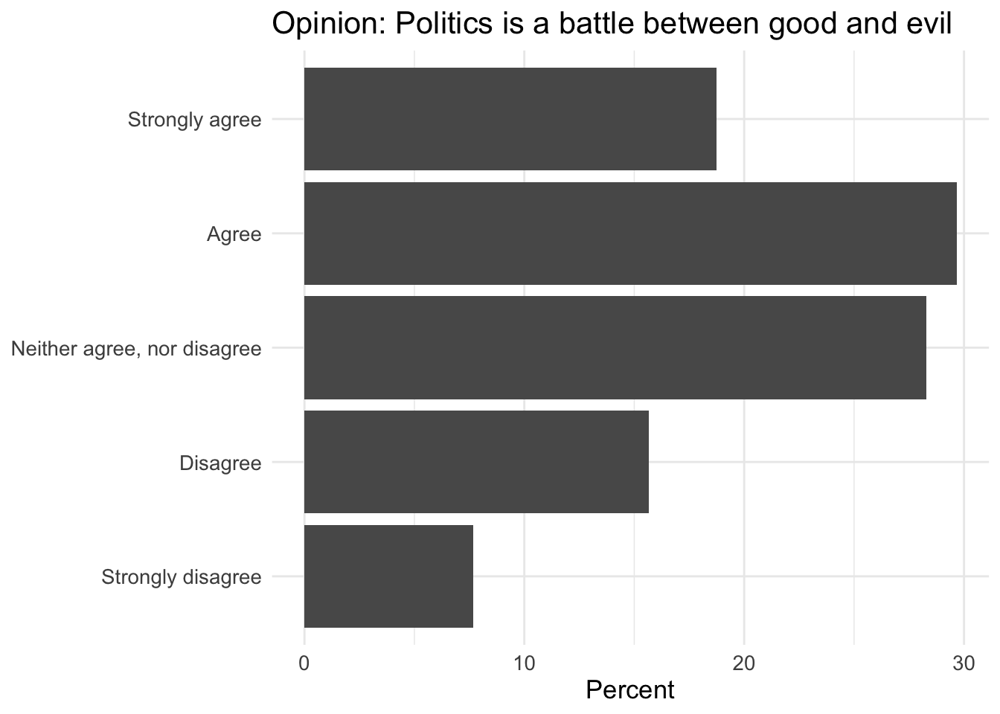
Would it be useful to plot bars in different colors? Potentially, but not like this…
d2 %>%
count(goodevil) %>%
mutate(percent = n/sum(n)*100) %>%
ggplot(aes(y=as_factor(goodevil),x=percent,fill=as_factor(goodevil))) +
geom_col()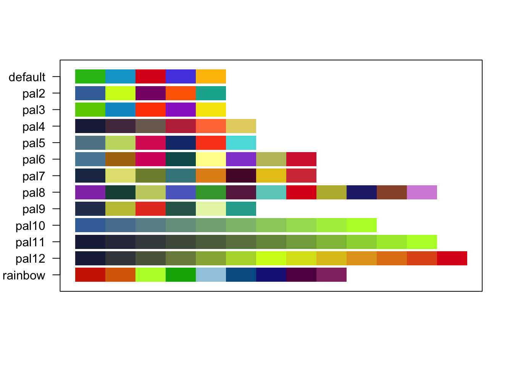
Let’s:
- Change/improve the colors
- Clean up the labels as appropriate
This scale might work - here darker colors indicate greater disagreement:
d2 %>%
count(goodevil) %>%
mutate(percent = n/sum(n)*100) %>%
ggplot(aes(y=as_factor(goodevil),x=percent,fill=as_factor(goodevil))) +
geom_col() +
scale_fill_viridis_d() +
labs(x="Proportion of respondents", y= "", fill = "",
subtitle = "Opinion: Politics is a battle between good and evil", caption= "Data: Uscinski et al. (AJPS, 2021).")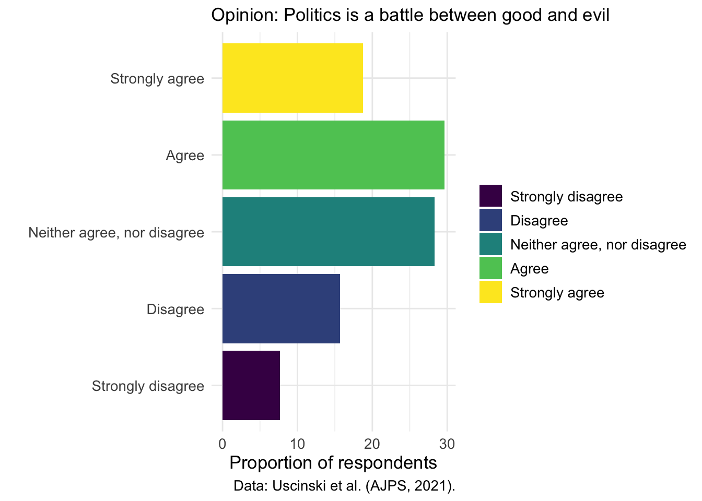
5.3 Faceting by party ID
Faceting allows us to show multiple small versions of the same chart, one for each subgroup.
Let’s try to:
- add
facet_wrap(~pid) - which means we also have to use
group_by(pid)before runningcount()
d2 %>% group_by(pid) %>%
count(goodevil) %>%
mutate(percent = n/sum(n)*100) %>%
ggplot(aes(y=as_factor(goodevil),x=percent,fill=as_factor(goodevil))) +
geom_col() + scale_fill_viridis_d() +
labs(x="Proportion of respondents", y= "", fill = "", subtitle = "Opinion: Politics is a battle between good and evil", caption= "Data: Uscinski et al. (AJPS, 2021).") +
facet_wrap(~pid) 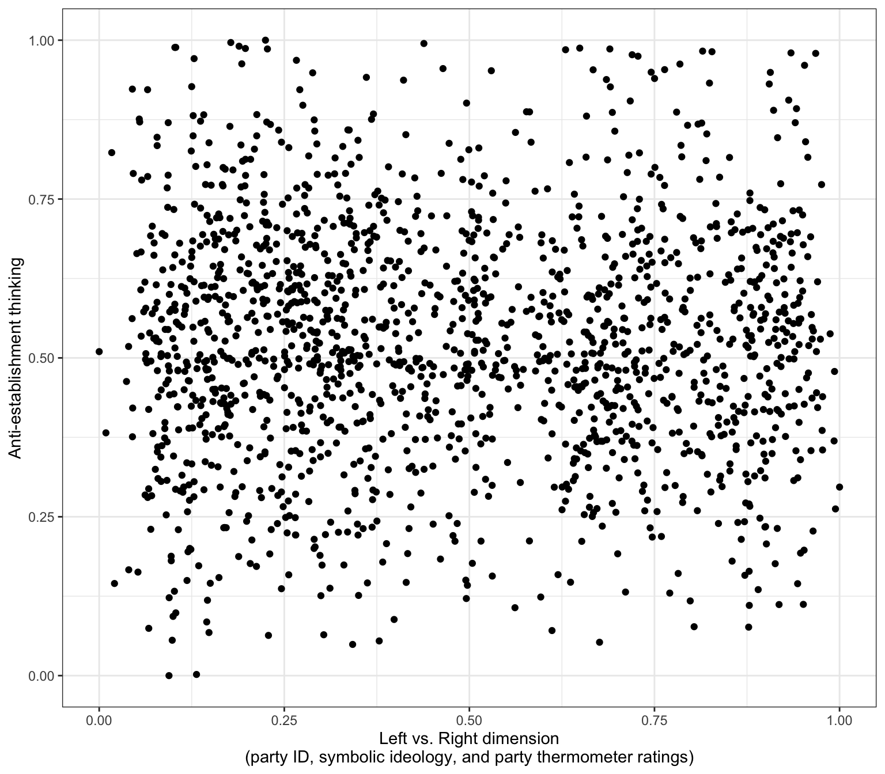
Also, we really need to show the party labels, not their numbers.
Here as_factor(variable) will work as long as variable is indeed labelled:
d2 %>% group_by(pid) %>%
count(goodevil) %>%
mutate(percent = n/sum(n)*100) %>%
ggplot(aes(y=as_factor(goodevil),x=percent,fill=as_factor(goodevil))) +
geom_col() + scale_fill_viridis_d() +
labs(x="Proportion of respondents", y= "", fill = "", subtitle = "Opinion: Politics is a battle between good and evil", caption= "Data: Uscinski et al. (AJPS, 2021).") +
facet_wrap(~as_factor(pid)) +
theme(text=element_text(size=9))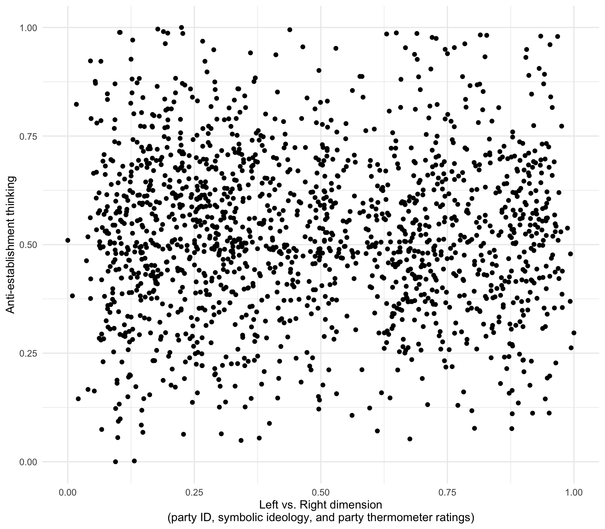
Note that we often want to increase the size of the text elements (theme(text=element_text(size=...))) but in this case I’m actually making the text smaller so that facet labels fit on the page.
Are stronger partisans are more Manichean on average?
d2 %>% group_by(pid) %>%
count(goodevil) %>%
mutate(percent = n/sum(n)*100) %>%
ggplot(aes(y=as_factor(pid),x=percent,fill=as_factor(goodevil))) +
geom_col() +
scale_fill_viridis_d(alpha=.885) +
labs(x="Proportion of respondents", y= "", fill = "",
title = "Opinion: Politics is a battle between good and evil", caption= "Data: Uscinski et al. (AJPS, 2021).")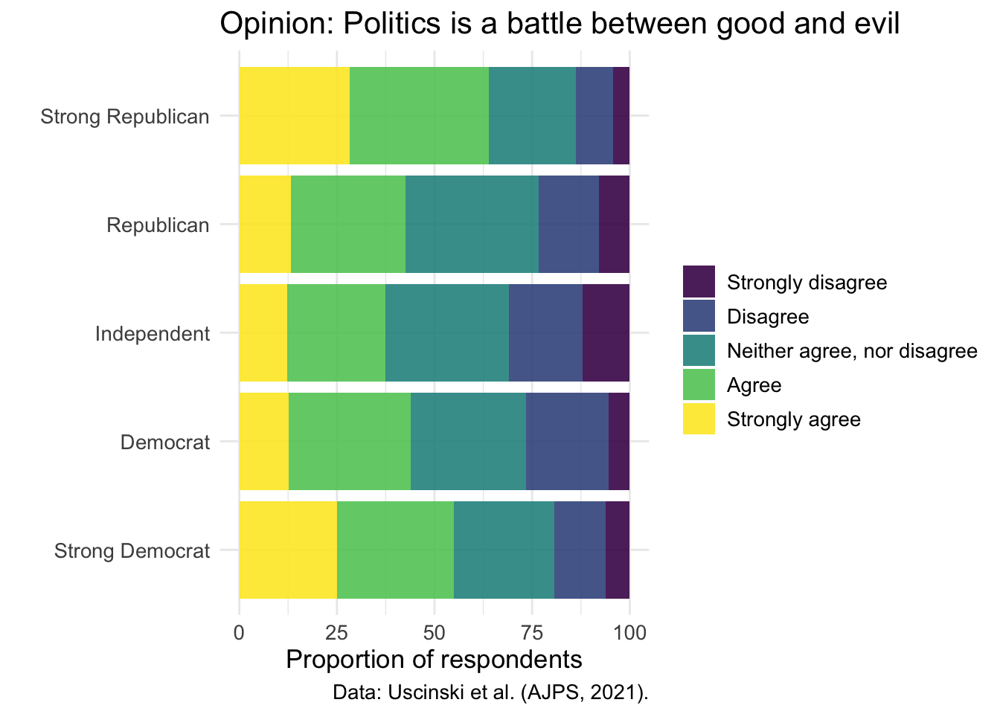
5.4 Showing more variables together
We can display multiple related survey questions simultaneously to show broader patterns in anti-establishment thinking. Rather than making four separate charts for four conspiracy items, we’ll stack them vertically to create a “small multiples” visualization that makes comparisons easier.
Let’s create several data objects: each of them will contain responses to the components of the conspiracy thinking scale:
pop2share <- d2 %>%
count(pop2) %>%
mutate(percent = n/sum(n)*100) %>%
mutate(categories = as_factor(pop2)) %>%
mutate(q = "People who have studied for a long time\nand have many diplomas do not really know\nwhat makes the world go round.")
officialshare <- d2 %>%
count(official) %>%
mutate(percent = n/sum(n)*100) %>%
mutate(categories = as_factor(official)) %>%
mutate(q = "Official government accounts of events\ncannot be trusted.")
con1share <- d2 %>%
count(con1) %>%
mutate(percent = n/sum(n)*100) %>%
mutate(categories = as_factor(con1)) %>%
mutate(q = "Even though we live in a democracy,\na few people will always run things anyway")
con4share <- d2 %>%
count(con4) %>%
mutate(percent = n/sum(n)*100) %>%
mutate(categories = as_factor(con4)) %>%
mutate(q = "Much of our lives are being controlled\nby plots hatched in secret places.")Create one larger data objhect:
shareShow <-
bind_rows(
pop2share,
officialshare,
con1share,
con4share
) %>%
filter(!is.na(categories))
head(shareShow)# A tibble: 6 x 8
pop2 n percent categories q official con1 con4
<dbl+lbl> <int> <dbl> <fct> <chr> <dbl+lb> <dbl> <dbl>
1 1 [Strongly disagree] 72 3.56 Strongly ~ "Peo~ NA NA NA
2 2 [Disagree] 226 11.2 Disagree "Peo~ NA NA NA
3 3 [Neither agree, nor di~ 709 35.0 Neither a~ "Peo~ NA NA NA
4 4 [Agree] 633 31.3 Agree "Peo~ NA NA NA
5 5 [Strongly agree] 383 18.9 Strongly ~ "Peo~ NA NA NA
6 NA 107 5.29 Strongly ~ "Off~ 1 [Str~ NA NA Make a plot:
shareShow %>%
ggplot(aes(y=as_factor(q),x=percent,fill=as_factor(categories))) +
geom_bar(position="stack", stat="identity", width = .5) +
jcolors::scale_fill_jcolors(palette = "pal4") +
theme_minimal() + theme(text = element_text(size=15)) +
labs(y = "",x = "Percent", fill = "",title = "Uscinski et al. (AJPS, 2021) survey data\non anti-establishment sentiment")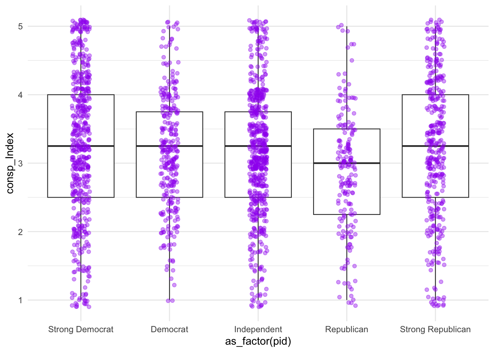
This stacked bar chart shows four anti-establishment attitude questions arranged vertically. Each bar is divided by response category (strongly disagree, disagree, neutral, agree, strongly agree). The color coding makes it easy to spot patterns.
Look at the components of jcolors.
jcolors::display_all_jcolors()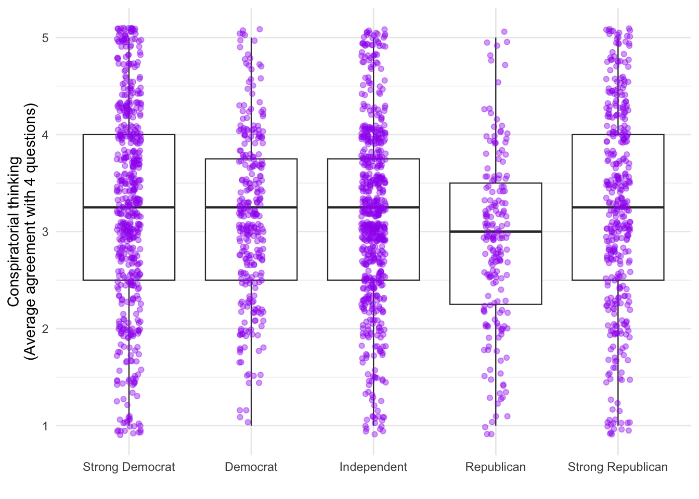
5.5 Putting anti-establishment thinking on the 2nd axis
The AJPS paper argues that American politics isn’t just left vs. right - there’s also a second dimension of anti-establishment versus pro-establishment attitudes. These scatterplots will help us visualize how these two dimensions relate to each other, using the dataset d1 which contains individual-level responses.
d1 %>% ggplot(aes(x = leftright2, y = suspicion2)) +
geom_point() +
labs(x = "Left vs. Right dimension\n(party ID, symbolic ideology, and party thermometer ratings)",
y = "Anti-establishment thinking") + theme_gray()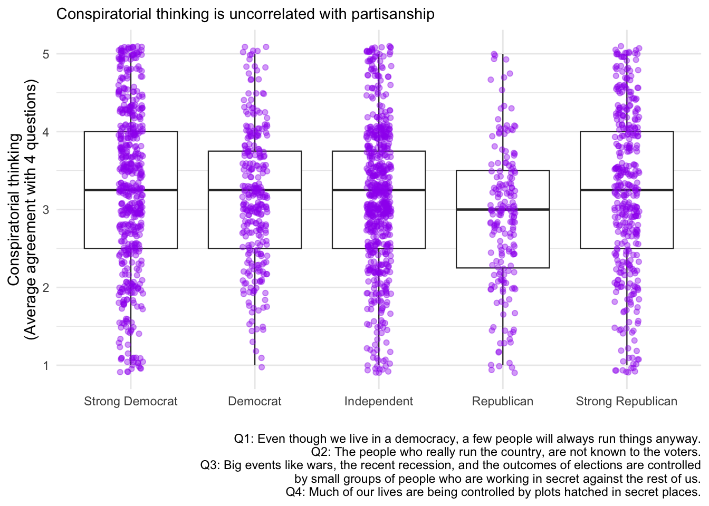
This scatterplot shows each survey respondent as a point. The x-axis represents how liberal (left) or conservative (right) they are, while the y-axis shows their level of anti-establishment thinking. If you see a cloud of points without a clear diagonal pattern, this suggests these two dimensions are largely independent - meaning you can be a left-wing anti-establishment type OR a right-wing anti-establishment type.
d1 %>% ggplot(aes(x = leftright2, y = suspicion2)) +
geom_point() +
labs(x = "Left vs. Right dimension\n(party ID, symbolic ideology, and party thermometer ratings)",
y = "Anti-establishment thinking") +
theme_bw()d1 %>% ggplot(aes(x = leftright2, y = suspicion2)) +
geom_point() +
labs(x = "Left vs. Right dimension\n(party ID, symbolic ideology, and party thermometer ratings)",
y = "Anti-establishment thinking") +
theme_minimal()
d1 %>% ggplot(aes(x = leftright2, y = suspicion2)) +
geom_point(color = "purple", alpha=.55) +
labs(x = "Left vs. Right dimension\n(party ID, symbolic ideology, and party thermometer ratings)",
y = "Anti-establishment thinking", title = "Conspiracy, populist, and Manichean orientations\nare orthogonal to the standard partisan divide", caption = "Data: Uscinski et al. (AJPS, 2021).") +
theme_minimal()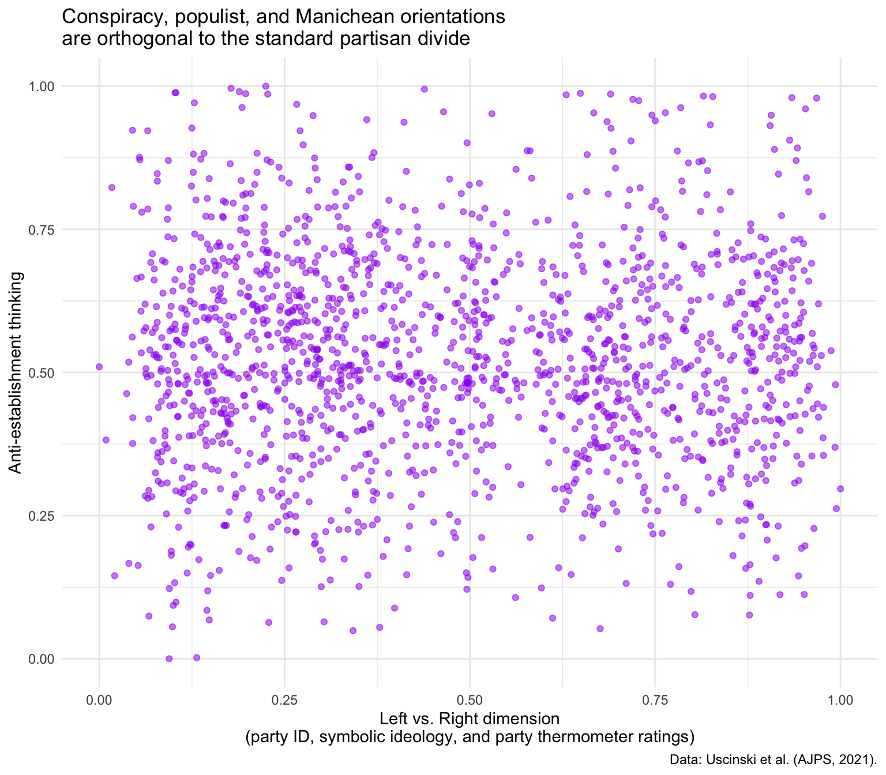
5.6 Conspiratorial orientation and PID
In principle, a box plot might make sense in this context… We’re now examining whether conspiracy thinking differs systematically across party lines. Box plots show the distribution of conspiracy thinking scores for each party identification group, allowing us to compare medians, quartiles, and outliers.
d2 %>%
ggplot(aes(x=as_factor(pid), y=consp_Index)) +
geom_boxplot(size=.4) +
theme_minimal() 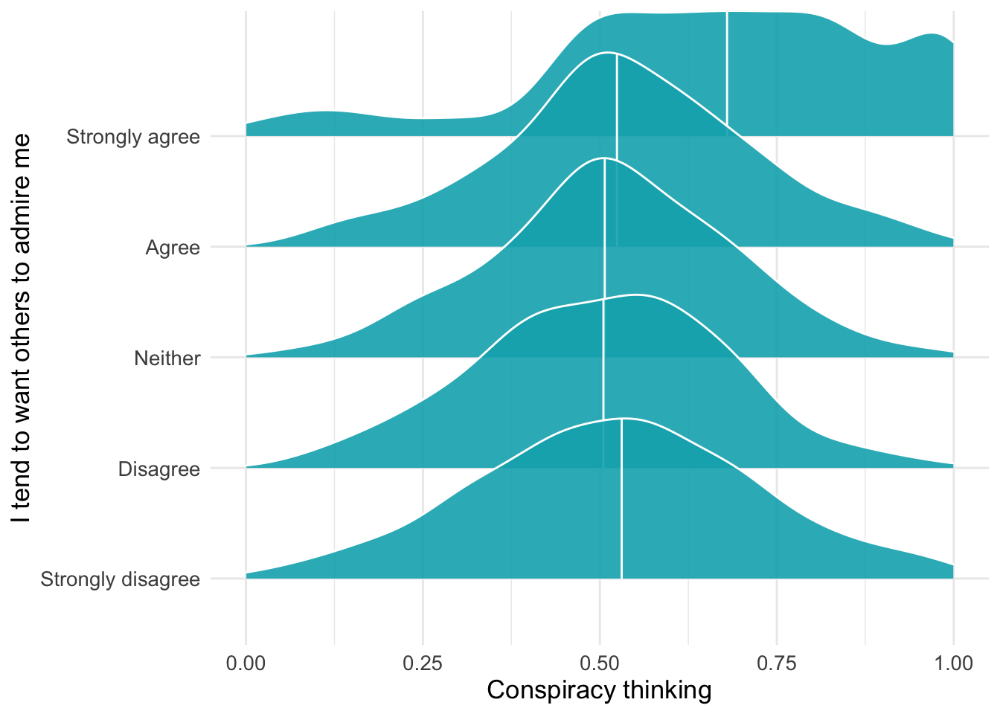
You could simultaneously display all respondets (jittered):
d2 %>%
ggplot(aes(x=as_factor(pid), y=consp_Index)) +
geom_boxplot(size=.4) +
geom_jitter(color="purple",alpha=.4,width = .1) +
theme_minimal() The boxplot shows the median, quartiles, and outliers for each party group, while the jittered points display every individual respondent’s conspiracy thinking score. This combination reveals both the summary statistics and the full distribution - you can see whether scores are tightly clustered around the median or widely spread out within each party.
Make small edits:
d2 %>%
ggplot(aes(x=as_factor(pid), y=consp_Index)) +
geom_boxplot(size=.4) +
geom_jitter(color="purple",alpha=.4,width = .1) + theme_minimal() +
labs(y="Conspiratorial thinking\n(Average agreement with 4 questions)",x = "")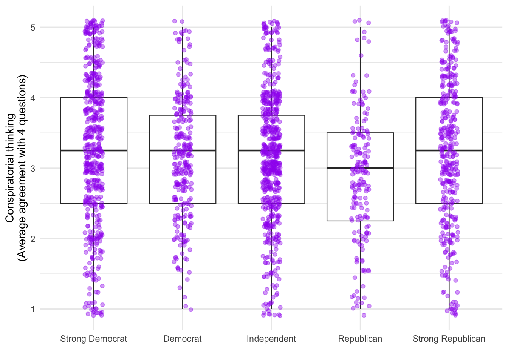
Perhaps even better:
d2 %>%
ggplot(aes(x=as_factor(pid), y=consp_Index)) +
geom_boxplot(size=.4) + geom_jitter(color="purple",alpha=.4,width = .1) + theme_minimal() +
labs(y="Conspiratorial thinking\n(Average agreement with 4 questions)",x = "",subtitle = "Conspiratorial thinking is uncorrelated with partisanship",
caption = "Q1: Even though we live in a democracy, a few people will always run things anyway.
Q2: The people who really run the country, are not known to the voters.
Q3: Big events like wars, the recent recession, and the outcomes of elections are controlled\nby small groups of people who are working in secret against the rest of us.
Q4: Much of our lives are being controlled by plots hatched in secret places.")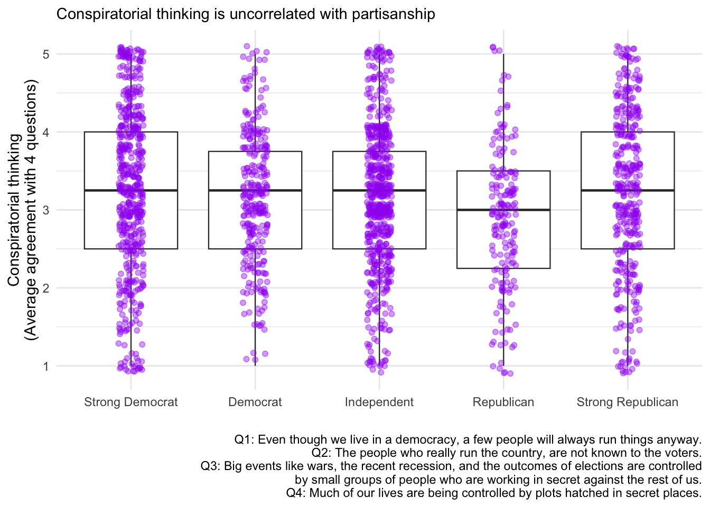
5.7 All 3 components of the anti-est. orientation
d2 %>%
ggplot(aes(x=as_factor(pid), y=suspicion2)) +
geom_boxplot(fill="purple", alpha=.2) +
geom_jitter(alpha=.2,width = .11,color="purple4") +
theme_minimal() +
labs(y="Conspiratorial thinking + Populism + Manichean outlook",x = "")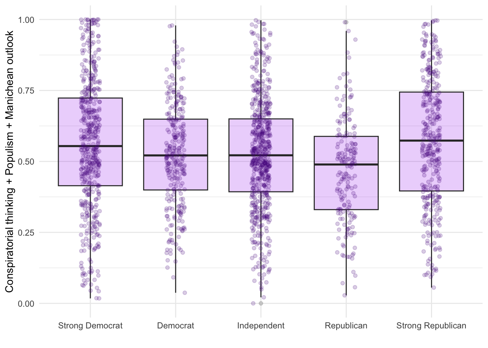
5.8 Narcissism as a correlate for conspiracy thinking?
The research also explores whether personality traits, specifically narcissism, relate to anti-establishment orientations. People who score high on narcissism tend to need admiration and may view themselves as superior to others - traits that might make them more likely to believe shadowy elites are controlling society.
d1 %>% filter(!is.na(attent1)) %>%
ggplot(aes(y = as_factor(attent1), x= suspicion2)) +
geom_density_ridges()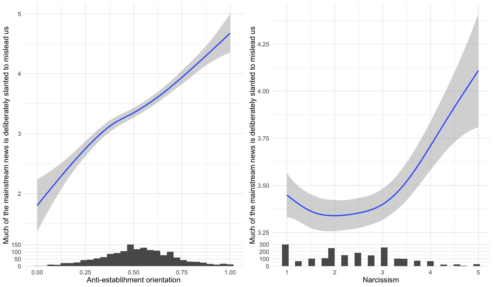
These “ridgeline” plots show the distribution of anti-establishment thinking scores for each level of agreement with “I tend to want others to admire me” (a narcissism indicator). Each ridge represents one response category, allowing us to see whether higher narcissism is associated with stronger anti-establishment views.
d1 %>% filter(!is.na(attent1)) %>%
ggplot(aes(y = as_factor(attent1), x= suspicion2)) +
geom_density_ridges(
fill = "#00AFBB",
quantile_lines = TRUE, quantiles = 2,alpha = .9,color = "white") +
labs(y= "I tend to want others to admire me",x="Conspiracy thinking")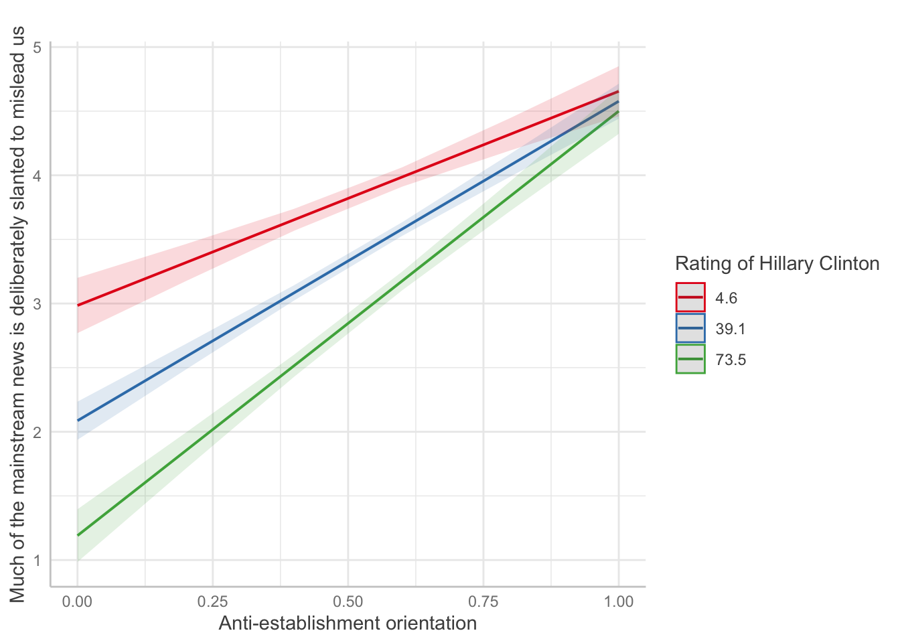
d1 %>% filter(!is.na(attent1)) %>%
ggplot(aes(y = as_factor(attent1), x= suspicion2)) +
geom_density_ridges(
fill = "#00AFBB",
quantile_lines = TRUE, quantiles = 2,alpha = .9,color = "white") +
xlim(0,1) + labs(y= "I tend to want others to admire me",x="Conspiracy thinking")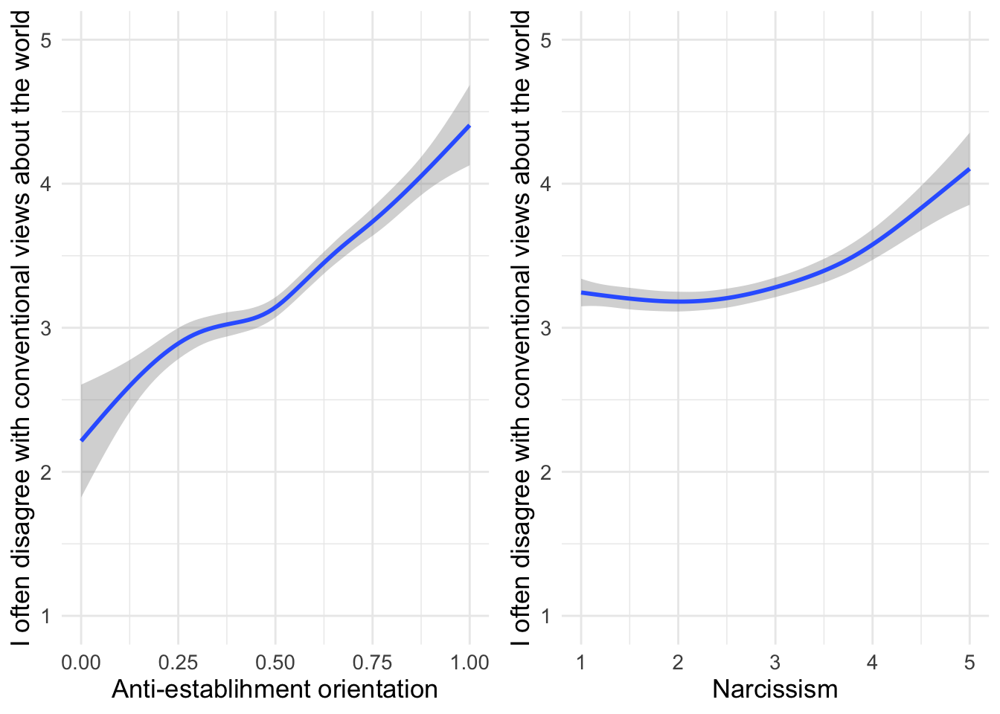
d1 %>% filter(!is.na(attent1)) %>%
ggplot(aes(y = as_factor(attent1), x= suspicion2)) +
geom_density_ridges(
fill = "#00AFBB",
quantile_lines = TRUE, quantiles = 2,alpha = .9,color = "white") +
xlim(0,1) + labs(y= "I tend to want others to admire me",
x = "The horizontal dimension measures how strongly respondents exhibit 3 traits:
1. Conspiratorial thinking (e.g. \"Our lives are controlled by secret plots\")
2. Populist beliefs
3. Manichean political views",caption = "Data: Uscinski et al. (AJPS, 2021).")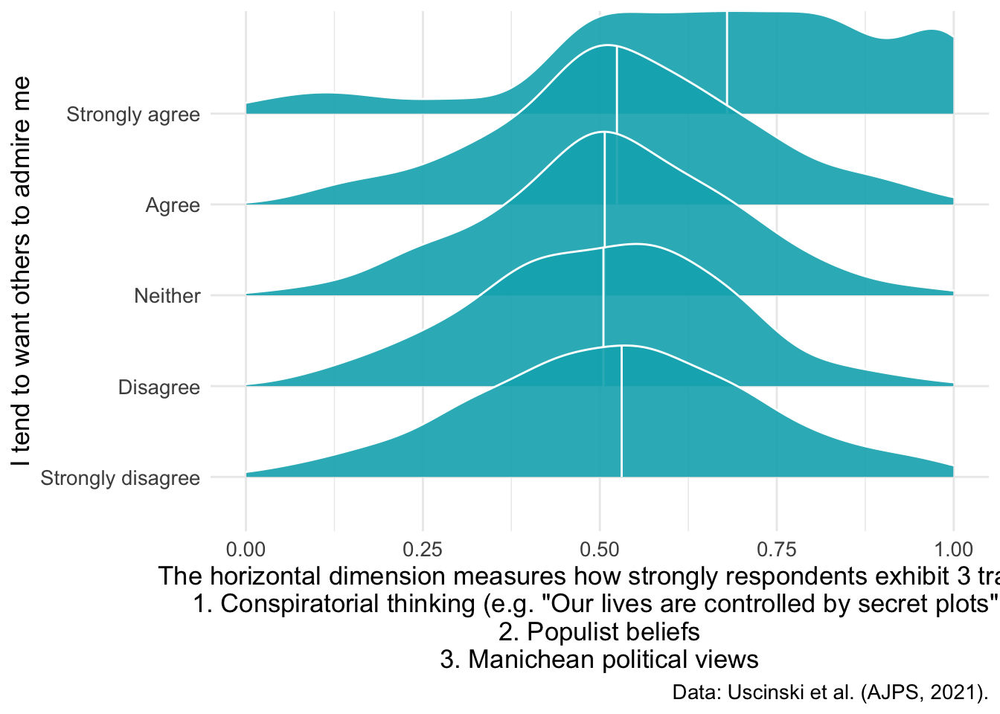
d1 %>%
ggplot(aes(x=narcissism,y=suspicion2)) +
geom_smooth() + labs(x = "Narcissism", y="Anti-establishment orientation") 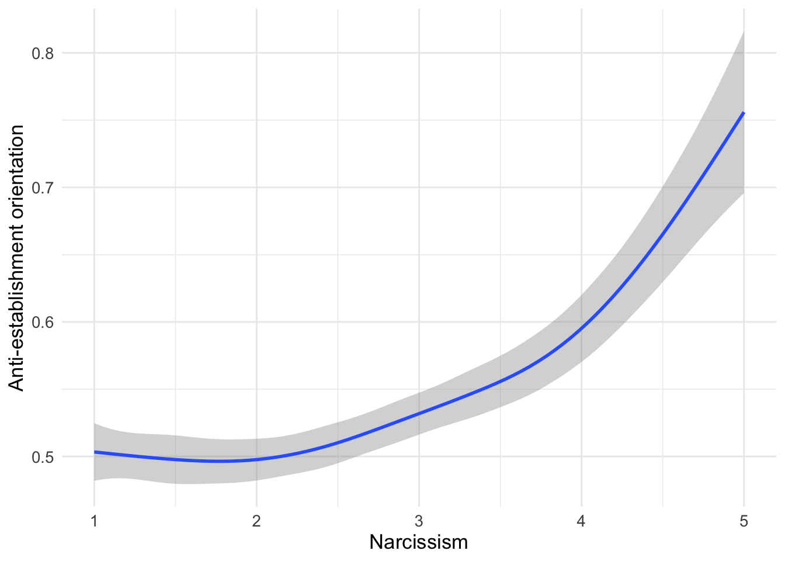
d1 %>%
ggplot(aes(x=narcissism,y=suspicion2)) +
geom_smooth() + labs(x = "Narcissism", y="Anti-establishment orientation") +
ggside::geom_xsidehistogram() +
ggside::ggside(x.pos = "bottom") 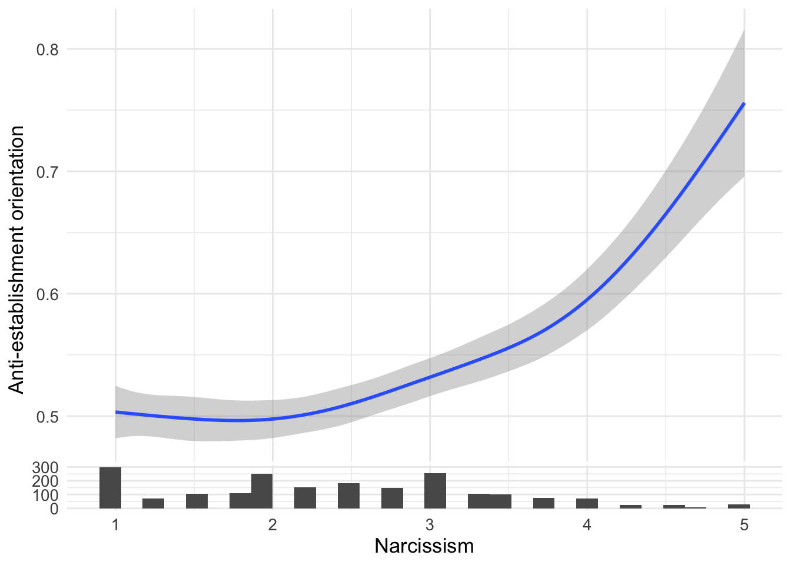
5.9 Mainstream news
The survey also measured distrust in mainstream media, asking whether “much of the mainstream news is deliberately slanted to mislead us.” This analysis examines whether anti-establishment orientations and narcissism both correlate with media distrust - two potential pathways to believing that established news sources are unreliable. The ggside package adds histograms on the sides to show the distribution of predictors.
ggpubr::ggarrange(
d1 %>%
ggplot(aes(x=suspicion2,y=msm)) +
geom_smooth() +
labs(x = "Anti-establishment orientation", y="Much of the mainstream news is deliberately slanted to mislead us") +
ggside::geom_xsidehistogram() +
ggside::ggside(x.pos = "bottom") ,
d1 %>%
ggplot(aes(x=narcissism,y=msm)) +
geom_smooth() +
labs(x = "Narcissism", y="Much of the mainstream news is deliberately slanted to mislead us") +
ggside::geom_xsidehistogram() +
ggside::ggside(x.pos = "bottom")
)This regression analysis examines whether the relationship between anti-establishment orientation and media distrust changes based on how much someone likes or dislikes Hillary Clinton. The ggeffects package helps visualize interaction effects - you might see that the slope of anti-establishment → media distrust is steeper for Clinton supporters or opponents.
collmod <- lm(msm ~ clintonft*suspicion2, data=d1)
ggeffects::ggeffect(collmod, terms=c("suspicion2","clintonft")) %>% plot() +
labs(color="Rating of Hillary Clinton",y="Much of the mainstream news is deliberately slanted to mislead us",
x="Anti-establishment orientation",title="")5.10 “I often disagree with conventional views about the world”
Now we examine whether anti-establishment orientations and narcissism both predict a general tendency to reject conventional wisdom. This statement captures contrarian thinking, which might be driven by both skepticism toward institutions (anti-establishment) and a belief in one’s own superior insight (narcissism).
ggpubr::ggarrange(
d1 %>%
ggplot(aes(x=suspicion2,y=conwis)) +
geom_smooth() +
labs(x = "Anti-establishment orientation", y="I often disagree with conventional views about the world") +
ylim(c(1,5)),
d1 %>%
ggplot(aes(x=narcissism,y=conwis)) +
geom_smooth() +
labs(x = "Narcissism", y="I often disagree with conventional views about the world") +
ylim(c(1,5))
)5.11 Denial of climate change
The survey also included a question about climate change denial.
table(d2$climatechange)
1 2 3 4 5
733 454 395 233 206 This shows the recoded binary variable, where responses 1-3 (disagree/neutral) become “0” and 4-5 (agree) become “1”. This dichotomization is commonly used when researchers want to separate climate change denial from acceptance.
table(d2$climatechangeBIN)
0 1
1582 439 d2 %>% count(climatechangeBIN)# A tibble: 3 x 2
climatechangeBIN n
<dbl> <int>
1 0 1582
2 1 439
3 NA 2This is an alternative way to display the binary variable counts using dplyr’s count() function, which some find easier to read than base R’s table().
Are the missing observations the same for the original and the recoded variable? (If not, we would want to check whether earlier code did something unintended.)
d2 %>% count(climatechangeBIN,climatechange)# A tibble: 6 x 3
climatechangeBIN climatechange n
<dbl> <dbl> <int>
1 0 1 733
2 0 2 454
3 0 3 395
4 1 4 233
5 1 5 206
6 NA NA 2This cross-tabulation checks that missing values (NAs) are handled consistently between the original and recoded variables. (If we see different patterns of missing data, it would indicate that the recoding process introduced problems.)
Now let’s visualize how climate change beliefs vary across the political spectrum:
d2 %>%
filter(!is.na(climatechange) & !is.na(pid)) %>%
group_by(pid) %>%
count(climatechange) %>%
mutate(percent = n/sum(n)*100) %>%
ggplot(aes(y=as_factor(pid), x=percent, fill=as_factor(climatechange))) +
geom_col() +
scale_fill_viridis_d(option = "plasma", direction = -1) +
labs(x="Percent of respondents",
y="",
fill="Climate change is a hoax",
title="Climate change beliefs across the political spectrum",
caption="Data: Uscinski et al. (AJPS, 2021)") +
theme_minimal() +
theme(text = element_text(size=13))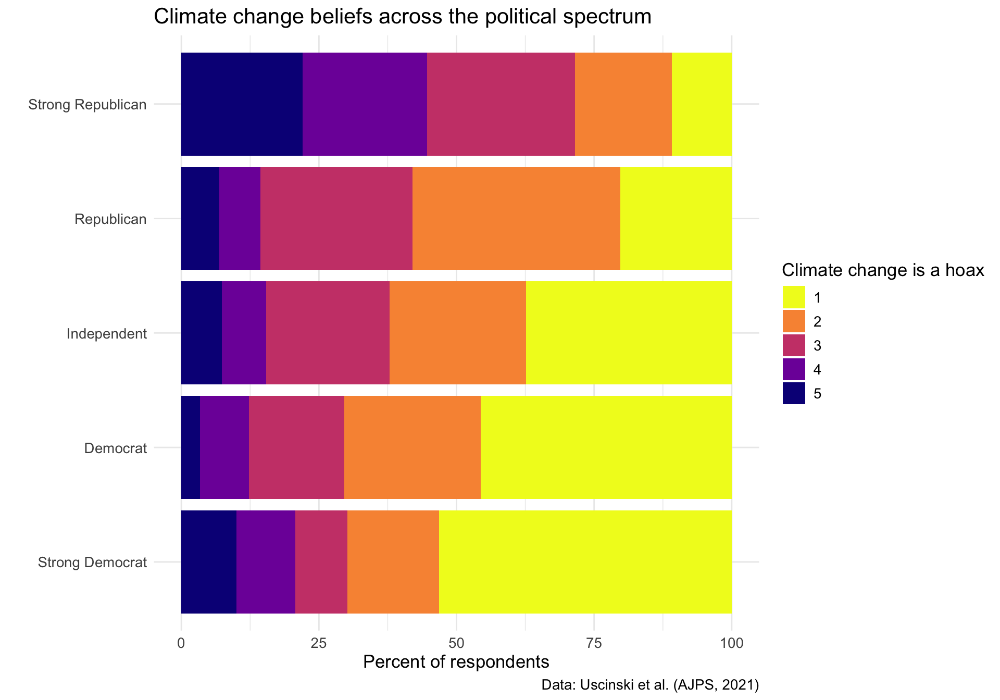
Strong Democrats show high agreement that climate change is real, while strong Republicans show much higher levels of skepticism. This visualization demonstrates how scientific issues can become polarized along partisan lines, with moderates (4) falling somewhere in between.